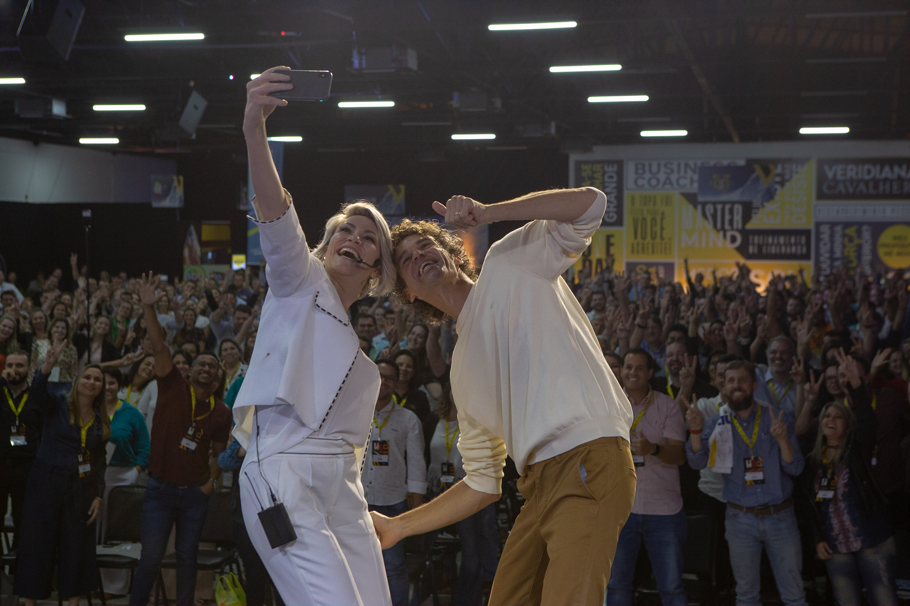

Cultura que orienta escolhas
Os valores da empresa precisam ajudar as pessoas a decidir como agir. Trabalhamos a conexão entre esses princípios, os comportamentos esperados e as práticas que a organização reforça no cotidiano.

VIRTÙ / A Virtù
Sua estratégia ganha força nas pessoas que a colocam em prática.
A Virtù
A Virtù conecta desenvolvimento de lideranças, cultura organizacional e gestão de pessoas aos desafios de crescimento da sua empresa.
Reunimos conhecimento, método e ferramentas para ajudar líderes e equipes a transformar aprendizado em decisões, comportamentos e práticas de gestão.
Uma estratégia depende de quem toma decisões, organiza prioridades, conduz conversas e acompanha o trabalho. Quando essas pessoas não têm clareza sobre seu papel, a distância entre o que a empresa planeja e o que acontece na rotina aumenta.
É nesse encontro entre pessoas e negócio que a Virtù atua. Trabalhamos com o desenvolvimento de lideranças e com a estruturação da gestão de pessoas, considerando a cultura, as expectativas e o momento de cada organização.
Isso significa olhar tanto para as habilidades de quem lidera quanto para as condições em que a equipe trabalha. Como as responsabilidades são definidas? Como os valores aparecem nas decisões? Como as pessoas recebem orientação, reconhecimento e oportunidades de desenvolvimento?
Essas perguntas ajudam a conectar o trabalho de desenvolvimento às necessidades reais da empresa.
Uma conversa sobre liderança ganha sentido quando ajuda um gestor a conduzir um feedback. Um trabalho sobre cultura se torna concreto quando orienta uma contratação, um reconhecimento ou uma decisão difícil.
Por isso, aproximamos conceitos, reflexão e prática. Nosso trabalho relaciona as habilidades comportamentais às situações que empresários, líderes e equipes precisam enfrentar.
O foco está em ampliar a capacidade de compreender pessoas, organizar o trabalho e agir com consciência sobre o impacto de cada escolha. O desenvolvimento passa a fazer parte da gestão quando encontra espaço nas conversas, nos processos e nos compromissos da equipe.
Os valores da empresa precisam ajudar as pessoas a decidir como agir. Trabalhamos a conexão entre esses princípios, os comportamentos esperados e as práticas que a organização reforça no cotidiano.
Liderar envolve dar direção, conversar com clareza, acompanhar entregas e preparar a equipe para assumir responsabilidades. Nossas jornadas abordam essas habilidades a partir dos desafios de quem está à frente de pessoas.
Responsabilidades, expectativas, processos e rituais ajudam a equipe a compreender o que precisa fazer e como seu trabalho contribui para o negócio. Conforme a jornada, apoiamos a organização dessas práticas com as lideranças.
Autoconhecimento, inteligência emocional e comunicação participam da forma como as pessoas enfrentam pressão, resolvem diferenças e trabalham juntas. Desenvolver essas habilidades amplia o repertório para lidar com as situações da rotina.
Ativar o potencial das pessoas construindo ambientes e negócios altamente positivos e lucrativos.
Ser referência nacional em educação corporativa, levando pessoas, times e negócios mais longe.
O propósito orienta a direção. Os resultados ajudam a avaliar quanto desse propósito se tornou prática. Por isso, olhamos para as entregas e para o que elas representam no contexto de cada trabalho.
A coerência entre discurso e atitude faz parte da nossa responsabilidade. O que defendemos sobre liderança, relações e compromisso precisa aparecer na maneira como conduzimos nosso próprio trabalho.
Agir no tempo certo, com atenção à qualidade. Valorizamos a capacidade de reconhecer o que precisa ser feito, tomar decisões e colocar o trabalho em movimento.
Assumir uma entrega significa se responsabilizar por ela até o fim. Construímos confiança no cumprimento dos acordos e no cuidado com cada etapa do trabalho.
O formato acompanha a necessidade. Um evento pode abrir uma conversa importante. Uma jornada de aprendizagem permite aprofundar habilidades. Uma mentoria ou consultoria pode trabalhar decisões e processos com quem conduz a organização.
Encontros com Veridiana Cavalheri sobre liderança, comunicação, performance e autoliderança feminina, conforme o tema escolhido.
Acesso gravado Meta V, oficina Super Humanos e Mentoria Meta V: propostas distintas de estudo, aplicação e orientação para quem lidera.
O PHD trabalha habilidades em jornadas in company. O Vanguard se dedica à estruturação da cultura e dos processos de gestão de pessoas. O escopo de cada projeto acompanha as necessidades alinhadas com a organização.

Fundadora da Virtù, Veridiana atua desde 2012 em projetos que conectam liderança, cultura e gestão de negócios. Sua trajetória reúne consultoria, mentoria, formação de lideranças e palestras.
Administradora de formação e estudiosa do comportamento humano, traz para as jornadas uma perspectiva que aproxima as decisões do negócio das relações e dos comportamentos que fazem parte do trabalho.
Essa conexão orienta a atuação da Virtù: compreender o contexto da empresa e trabalhar o desenvolvimento das pessoas que participam de sua construção.
Pode ser a forma de liderar, a clareza das responsabilidades ou a maneira como a cultura aparece no dia a dia. Conte para a Virtù o que você está vivendo e o que deseja desenvolver.
Vamos entender seu contexto e identificar uma jornada que faça sentido para a sua organização.